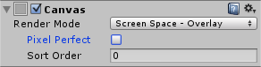
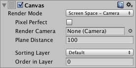
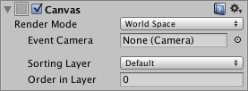
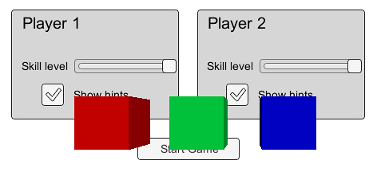

Canvas¶
The Canvas component represents the abstract space in which the UI is laid out and rendered. All UI elements must be children of a GameObject that has a Canvas component attached. When you create a UI element object from the menu (GameObject > Create UI), a Canvas object will be created automatically if there isn’t one in the scene already.



Properties¶
Property: |
Function: |
|---|---|
Render Mode |
The way the UI is rendered to the screen or as an object in 3D space (see below). The options are Screen Space - Overlay, Screen Space - Camera and World Space. |
Pixel Perfect (Screen Space modes only) |
Should the UI be rendered without antialiasing for precision? |
Render Camera (Screen Space - Camera mode only) |
The camera to which the UI should be rendered (see below). |
Plane Distance (Screen Space - Camera mode only) |
The distance at which the UI plane should be placed in front of the camera. |
Event Camera (World Space mode only) |
The camera that will be used to process UI events. |
Receives Events |
Are UI events processed by this Canvas? |
Details¶
A single Canvas for all UI elements is sufficient but multiple Canvases in the scene is possible. It is also possible use nested Canvases, where one Canvas is placed as a child of another for optimization purposes. A nested Canvas uses the same Render Mode as its parent.
Traditionally, UIs are rendered as if they were simple graphic designs drawn directly on the screen. That is to say, they have no concept of a 3D space being viewed by a camera. Unity supports this kind of screen space rendering but also allows UIs to rendered as objects in the scene, depending on the value of the Render Mode property. The modes available are Screen Space - Overlay, Screen Space - Camera and World Space.
Screen Space - Overlay¶
In this mode, the Canvas is scaled to fit the screen and then rendered directly without reference to the scene or a camera (the UI will be rendered even if there is no camera in the scene at all). If the screen’s size or resolution are changed then the UI will automatically rescale to fit. The UI will be drawn over any other graphics such as the camera view.

Note: The Screen Space - Overlay canvas needs to be stored at the top level of the hierarchy. If this is not used then the UI may disappear from the view. This is a built-in limitation. Keep the Screen Space - Overlay canvas at the top level of the hierarchy to get expected results.
Screen Space - Camera¶
In this mode, the Canvas is rendered as if it were drawn on a plane object some distance in front of a given camera. The onscreen size of the UI does not vary with the distance since it is always rescaled to fit exactly within the camera frustum. If the screen’s size or resolution or the camera frustum are changed then the UI will automatically rescale to fit. Any 3D objects in the scene that are closer to the camera than the UI plane will be rendered in front of the UI, while objects behind the plane will be obscured.

World Space¶
This mode renders the UI as if it were a plane object in the scene. Unlike Screen Space - Camera mode, however, the plane need not face the camera and can be oriented however you like. The size of the Canvas can be set using its Rect Transform but its onscreen size will depend on the viewing angle and distance of the camera. Other scene objects can pass behind, through or in front of the Canvas.

Hints¶
Read more about setting up a World Space Canvas on the Creating a World Space UI page.
For information about making your Canvas and UI scale to different resolutions or aspect ratios, see the Designing UI for Multiple Resolutions page as well as the Canvas Scaler page.